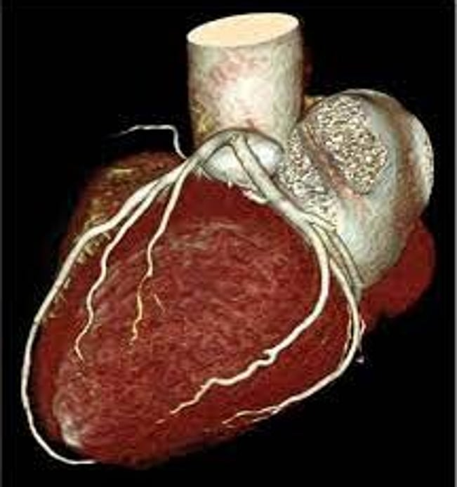
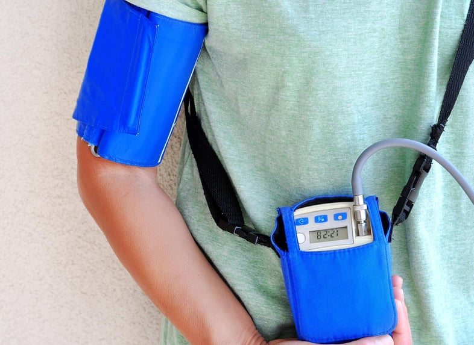
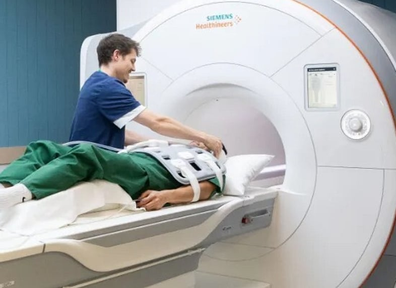
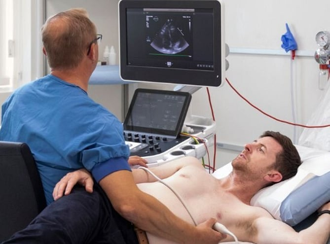
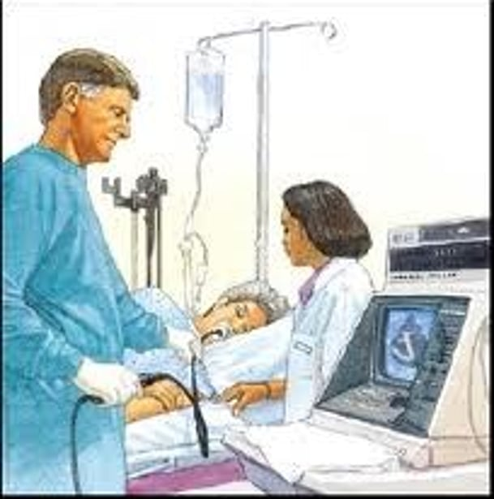
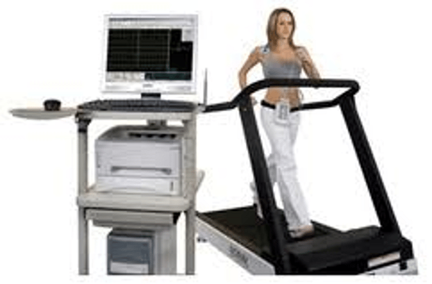
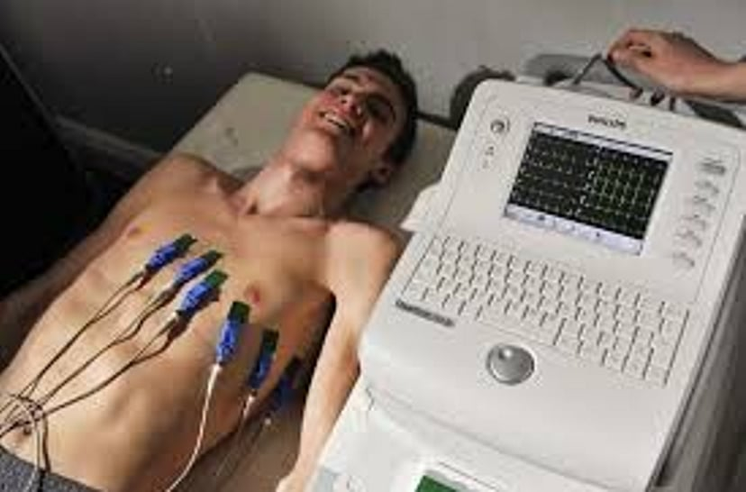

CT calcium score
A calcium score helps with your decision regarding the need for treatment to prevent a heart attack or stroke. This investigation is most helpful for people who do not have a clear high or low risk but somewhere in the middle. A calcium score is quick and non-invasive.
Many people are offered statin therapy but are unsure as to whether they should take this medication fearing side effects. A calcium score allows patients to make a more informed decision regarding use of these medications moving forward.
If you have no symptoms and are concerned about your risk of heart attack or stroke this is the preferred investigation.

CT Coronary Angiography
CT coronary angiography offers a non-invasive way of imaging the coronary arteries. This test gives us an idea of calcium deposition within the coronary arteries and plaque formation due to fat deposition. Not only will it tell us if you have an important narrowing of a coronary artery but the knowledge of the extent of atheroma formation in the arteries will allow us to more accurately quantify your cardiovascular risk and the need for ongoing heart medications such as statins, as well as plan for stent insertion if needed.
This is the preferred test for the assessment of chest pain. It cannot be used as a screening investigation for patients who do not have symptoms as it requires the administration of contrast. There is always a small risk of allergic reactions to contrast and this is not an acceptable risk if you have no symptoms. Calcium scoring is used in these cases.
Patient information for CT angiography (PDF)
Heart rhythm recording for palpitations
In addition to the standard cardiac heart monitor we now offer the patch Holter monitoring system. This lightweight wearable device offers more freedom to continue with your day-to-day activities. It is lightweight, easier to use, waterproof and can be worn for up to 7 days. In times where it is necessary to reduce contact it can be posted to you and fitted yourself using the attached guide and video.
Patch application guide (PDF)
24h Blood pressure
A 24-hour blood pressure monitor (Ambulatory Blood Pressure Monitoring — ABPM) is a non-invasive, wearable device that tracks blood pressure at regular intervals — typically every 30 minutes during the day and hourly at night — while you go about your normal daily routine. It provides a comprehensive, 24-hour profile of heart health, helping clinicians diagnose conditions like "white-coat" or "masked" hypertension that office readings might miss.

Cardiac MRI
A cardiac MRI (magnetic resonance imaging) is a type of heart scan. It uses a strong magnetic field, radio waves and a powerful computer to capture images of your heart and blood vessels from outside your body.
Key benefits:
- Detailed images of the heart's anatomy and function
- When used for perfusion (blood flow) it can accurately detect the cause of angina and direct treatment pathways. This has replaced ETT and stress echo in most cases.

Echocardiography
An echocardiogram (echo) is a non-invasive, painless ultrasound test that uses high-frequency sound waves to create live, moving images of the heart's chambers, valves, and walls. It measures pumping efficiency, assesses heart health, and uses no radiation.

Trans-oesophageal echocardiography (T.O.E.)
Usually a standard echocardiogram is detailed enough to give all the information about the heart we require. Sometimes however, particularly in patients with a problem with one of the heart valves, we need to get really detailed pictures of the heart and this can be done by passing a narrow flexible tube down your throat and gullet. The tube has a tiny echo sensor built into the tip and this generates extremely detailed pictures of the heart with no interference from the lungs and ribs.
This procedure is often also performed during heart valve surgery to help guide the surgeon. This test is extremely safe and you will usually only need to spend a few hours in the hospital and go home on the same day. It requires a brief general anaesthetic.

Exercise Tolerance Test (ETT)
This was a traditional test used to assess angina but is not that accurate and not used for this anymore. It is of no use in patients who have no symptoms and are worried about their risk of heart attack or stroke. It is mostly used as a basic screening test that is mandated by licencing authorities or to see if heart rhythm problems are related to exercise.
A continuous ECG is taken whilst you undergo a graded standardised exercise on a treadmill. The test starts at a leisurely pace and gradually the speed and gradient increase every three minutes. If you are on medication it is important to ask your doctor or one of our team if you should withhold your medication on the day of your test.
Southern Cross insurance is the only health insurer that may mandate this investigation before more sensitive and specific investigations are funded.

Electrocardiogram (ECG)
This simple, painless test takes a few minutes to perform. It turns the normal electrical activity of the heart into a tracing and this can reveal a number of different cardiac conditions which affect the structure and rhythm of the heart. As it is only a single brief snapshot of the heartbeat at rest a normal ECG does not necessarily exclude important disease of the heart but it is a good start.